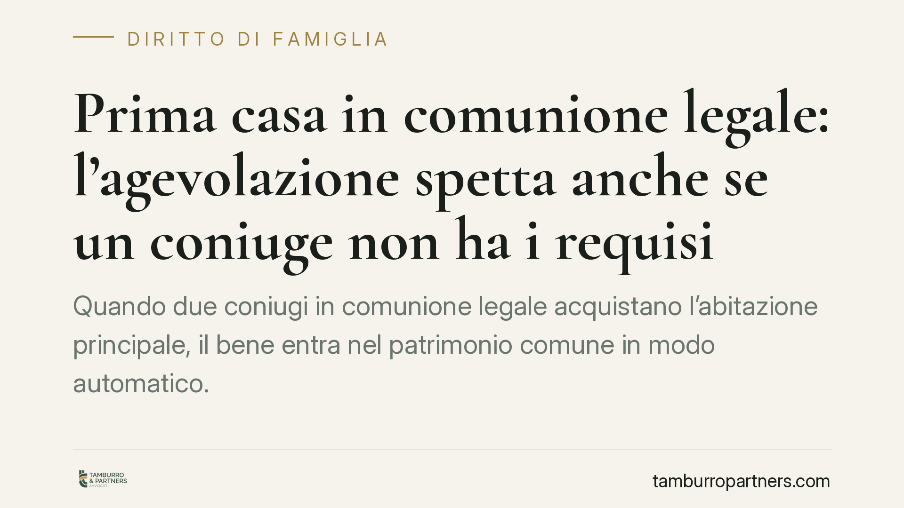

Prima casa in comunione legale: l'agevolazione spetta anche se un coniuge non ha i requisiti
Quando due coniugi in comunione legale acquistano l'abitazione principale, il bene entra nel patrimonio comune in modo automatico. Ma cosa accade se solo uno dei due possiede i requisiti per il bonus prima casa? La giurisprudenza consente all'altro di conservare l'agevolazione sulla propria quota. Chiariamo il perimetro della regola e le sue ricadute pratiche.

Il caso
Due coniugi in comunione legale dei beni acquistano un immobile destinato ad abitazione principale. Uno dei due, però, non soddisfa i requisiti richiesti per l'agevolazione prima casa: ad esempio è già titolare di un'altra abitazione acquistata con lo stesso beneficio, oppure non può o non vuole trasferire la residenza nel Comune dell'immobile.
La domanda è concreta: l'agevolazione salta del tutto, oppure il coniuge in regola può comunque fruirne? La risposta incide direttamente sull'imposta dovuta.
Inquadramento normativo
Le agevolazioni prima casa sono disciplinate dalla Nota II-bis all'articolo 1 della Tariffa, Parte prima, allegata al Dpr 26 aprile 1986, n. 131 (Testo unico dell'imposta di registro). La norma richiede, in sintesi: che l'immobile non sia di categoria catastale di lusso (A/1, A/8, A/9); che si trovi nel Comune di residenza dell'acquirente o in cui questi la trasferisca entro diciotto mesi; che l'acquirente non sia titolare di altra abitazione nello stesso Comune né di altra casa acquistata con il medesimo beneficio.
In regime di comunione legale (artt. 177 e seguenti del codice civile), l'acquisto compiuto da uno dei coniugi ricade automaticamente nel patrimonio comune per la metà. Su questa automaticità si innesta il punto: i requisiti prima casa hanno natura soggettiva, cioè vanno verificati in capo a ciascun acquirente. Secondo l'orientamento della Cassazione civile in materia tributaria, quando un solo coniuge possiede i requisiti, l'agevolazione compete comunque pro quota, ossia sulla metà riferibile al coniuge in regola. Trattandosi di un principio che va calato nel caso concreto, per la posizione specifica occorre la verifica dell'atto e della situazione dei singoli coniugi.
Implicazioni pratiche
La conseguenza fiscale è diretta. Sull'acquisto da privato l'imposta di registro ordinaria è pari al 9% della base imponibile (in genere il valore catastale rivalutato), mentre con il bonus prima casa scende al 2%.
Un esempio chiarisce l'effetto. Ipotizziamo una base imponibile di 200.000 euro:
- Entrambi i coniugi con requisiti (agevolazione piena al 2%): imposta pari a 4.000 euro.
- Nessun requisito (aliquota ordinaria al 9%): imposta pari a 18.000 euro.
- Un solo coniuge con requisiti (agevolazione pro quota): il 2% si applica sulla metà (100.000 euro = 2.000 euro), il 9% sull'altra metà (100.000 euro = 9.000 euro), per un totale di 11.000 euro.
Il risparmio, quindi, non è totale ma resta significativo: la posizione del coniuge in regola non viene compromessa da quella dell'altro.
Un chiarimento utile riguarda gli strumenti che *non* incidono su questo problema. Il fondo patrimoniale (art. 167 c.c.) ha finalità di destinazione dei beni ai bisogni della famiglia e di tutela verso i creditori: non produce alcun effetto sull'imposta di registro dovuta al momento dell'acquisto e non recupera i requisiti prima casa mancanti. Accostarlo alla questione fiscale sarebbe fuorviante.
Altra ipotesi da valutare con attenzione è l'esclusione del bene dalla comunione ai sensi dell'art. 179 c.c. Non si tratta di un generico "accordo tra coniugi": la norma elenca presupposti tassativi (ad esempio beni personali, beni acquistati con il prezzo del trasferimento di beni personali) e, in alcuni casi, richiede la partecipazione all'atto dell'altro coniuge. È una strada percorribile solo quando ne ricorrono le condizioni di legge, da verificare prima dell'acquisto.
Cosa fare in concreto
- Prima di firmare il preliminare, verificare la posizione di entrambi i coniugi rispetto ai requisiti soggettivi della Nota II-bis (residenza, precedenti agevolazioni, altre proprietà).
- Richiedere al notaio il calcolo comparativo dell'imposta nelle tre ipotesi (agevolazione piena, ordinaria, pro quota), così da conoscere in anticipo il costo effettivo.
- Se ricorrono i presupposti dell'art. 179 c.c., valutare con l'assistenza professionale l'esclusione del bene dalla comunione, verificandone le condizioni di legge.
- Documentare e conservare gli elementi che provano i requisiti (residenza, dichiarazioni rese in atto), a tutela in caso di controllo dell'Agenzia delle Entrate.
- In presenza di dubbi sulla qualificazione catastale o sui presupposti, richiedere la verifica prima della stipula, non dopo.
---
Contributo informativo a cura di Tamburro & Partners Avvocati - Avv. Giuseppe Tamburro. Non costituisce parere legale.
Ogni famiglia ha il suo equilibrio.
Separazione, divorzio, affidamento, assegno: se vuoi un confronto riservato su una specifica situazione, scrivi allo studio. Ti rispondiamo entro un giorno lavorativo.